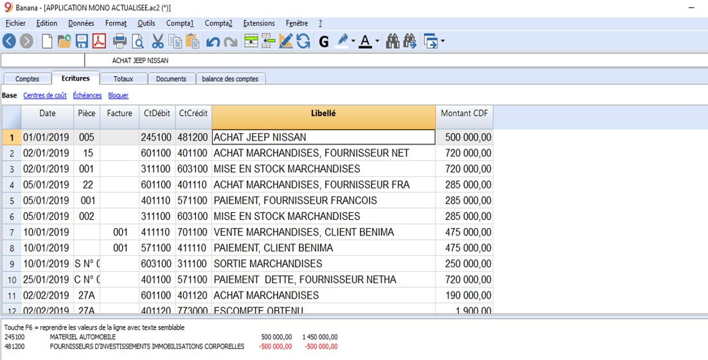

Activité 3
0001-01-01 00:00:00 +0000 UTCActivité 3 : Comptabilisation
Contenu:
A. Fiche Pédagogique
1. Objectifs spécifiques :
Au terme de cette activité, le participant sera capable de (d') :
-
Expliquer les notions de la comptabilisation à l’aide du logiciel comptable ;
-
Distinguer les types d’écritures dans le logiciel comptable ;
-
Utiliser la comptabilité en partie double avec TVA.
2. Supports :
-
OHADA, Acte uniforme relatif au droit comptable et à l’information financière et système comptable OHADA, Yaoundé le 15 février 2017 ;
-
Guide d’application OHADA ;
-
EPSP, DIPROMAD, Curriculum des Humanités Techniques Commerciales, Commerciale et Gestion, Kinshasa 2014 ;
-
SERNAFOR Technique, module de formation sur le système comptable OHADA niveau 4, 2018 ;
3. Méthodes et techniques :
Exposé, discussion dirigée, brainstorming et travail de groupe.
4. Durée :
120 minutes
5. Déroulement de l’activité :
| N° | Tâches | Méthodes et Techniques | Durée |
|---|---|---|---|
| 1 | Présenter l’activité et ses objectifs | Exposé | 5 min. |
| 2 | expliquer les notions de la comptabilisation à l’aide du logiciel comptable | Brainstorming | 15 min. |
| 3 | Constituer des sous-groupes pour :
|
Travail en groupe | 70 min. |
| 4 | En plénière : le rapporteur de chaque sous-groupe présente la production de son équipe suivie de mise en commun avec les membres des autre sous-groupes et du facilitateur. | Discussion dirigée | 20 min. |
| 5 | Questions de synthèse
|
Discussion dirigée | 10 min. |
B. Fiche Technique
1. Notions
1.1 Soldes d’ouvertures
Quand on utilise Banana Comptabilité pour la première fois, il est nécessaire d’insérer les soldes initiaux manuellement pour créer le bilan d’ouverture. Le solde d’ouverture d’un compte est indiqué dans la colonne Ouverture:
a. Se positionner dans le tableau Comptes, vue Base, colonne Ouverture;
b. Reporter manuellement les soldes initiaux des comptes Actifs et Passifs. Les soldes débiteurs sont indiqués normalement. Les soldes créditeurs sont indiqués avec le signe moins (en négatif);
c. Contrôler que le total Actifs est égal au total Passifs pour avoir l’équilibre comptable. Dans le cas qu’il y a des différences dans les soldes d’ouverture, il faut contrôler et corriger.
Pour reporter automatiquement les soldes d’ouverture pour l’année suivante, cliquer sur menu compta 2 puis cliquer sur créer une nouvelle année.
1.2 Mise à jour des soldes d’ouverture
La commande Mettre à jour Soldes d’ouverture :
-
Reprend les données de clôture du fichier indiqué.
-
Copie les données de l'année précédente dans le fichier courant (voir commande Créer nouvelle année)
La commande n’influence pas les écritures déjà insérées. En fait, c’est comme si on crée une nouvelle année et on enregistre dans l’année courante.
La commande Mettre à jour Soldes d’ouvertureest nécessaire dans les cas suivants :
-
Si on a créé une nouvelle année et par après on a fait d’ultérieures écritures ou corrections dans l’année précédente ;
-
Quand le bénéfice ou la perte de l’exercice n’a pas été reparti.
La procédure de mise à jour est la suivante :
-
Ouvrir le fichier de l’année courante et du menu Compta2, cliquer sur la commande Mettre à jour soldes d’ouverture
-
Spécifier le fichier de l’année précédente, avec le bouton Parcourir
-
Suivre les mêmes instructions que celles pour la commande Créer nouvelle année.

1.3 Écritures de l’année
Il s’agit d’insérer les écritures dans le journal. Les écritures doivent être insérées dans le Tableaux Écritures.

1.4 Commentaire sur les colonnes du tableau d’Écritures
a. Date : La date doit être située dans la période comptable définie dans les Données de base de la comptabilité. Dans les options on peut indiquer que la date est obligatoire, autrement la valeur peut être vide. S’il y a des écritures bloquées, le programme signale une erreur quand on insère une date inférieure ou égale à la date du bloc.
b. Pièce : Le numéro du justificatif qui est la base pour l’écriture comptable. En introduisant les écritures, il est conseillé d’indiquer un numéro progressif sur le document, de façon à ce que l’on peut facilement retrouver la pièce comptable. La fonction de saisie semi-automatique suggère des valeurs progressives et des codes d’écriture définis précédemment dans le tableau Écritures répétées. Le programme propose le numéro suivant du document, qui peut être repris avec la touche F6.
-
Numérotation numérique, le programme incrémente simplement la valeur plus élevée trouvée dans la colonne Doc ;
-
Numérotation alphanumérique, le programme incrémente la partie numérique finale ; cette fonction est utile si l’on veut tenir des numérotations séparées pour la caisse ou la banque.
-
Si précédemment C-01a été inséré, et on commence à taper C, le programme propose C-02.
-
Si précédemment B104 a été inséré, et on commence à taper B, le programme propose B105.
-
Si précédemment D10-04 a été inséré, et on commence à taper D, le programme propose D10-05.
-
Dans les écritures répétées vous pouvez prédisposer des groupes d’écritures qui seront reprises au moyen d’un code.
Pour ajouter une grande quantité de numéros, vous pouvez éventuellement profiter d’Excel. Créez dans Excel la quantité désirée de numéros de pièces et copier et coller dans la colonne Pièce du tableau Ecritures de Banana Comptabilité.
c. Numéro de la facture : Un numéro de facture émise ou payée qui est utilisé avec la fonction de contrôle-factures pour clients et fournisseurs.
d. Lien à fichier externe : Sert à insérer un lien à un fichier externe, habituellement le justificatif comptable. Avec la petite flèche en haut, le programme ouvre le document. Cette colonne est utilisée avec la commande Lien à un document
e. Libellé : Le texte de l’écriture. La fonction de saisie semi-automatique suggère le texte d’une écriture déjà insérée, ou insérée l’année précédente si l’option appropriée est active. En pressant la touche F6, le programme reprend les données de la ligne précédente avec le même libellé et complète les champs de la ligne actuelle.
f. Compte Débit : Le compte qui sera débité.
g. Compte Débit Description : La description du compte inséré, reprise du plan comptable
h. Compte Crédit : Le compte qui sera crédité. Pour le reste, nous renvoyons l’utilisateur à l’explication sous “Compte Débit”.
i. Compte Crédit Description: La description de ce compte, reprise du plan comptable
j. Montant : Le montant qui sera inséré sur le compte Débit et le compte Crédit.
2. Types d’écritures
Avec le logiciel banana comptabilité, vous avez la possibilité de tenir :
-
La Comptabilité en partie double mono-devise sans ou avec TVA ;
-
La Comptabilité en partie double multidevise sans ou avec TVA
-
La Comptabilité en partie double mono-devise sans TVA ;
Il y a généralement deux types d’écritures :
-
Ecritures simples
-
Ecritures composées
2.1 Comptabilité en partie double sans TVA
a. Écritures simples
L’écriture simple celle qu’inclue deux comptes qui sont insérés chacun sur une seule ligne. Le numéro de pièce est différent pour chaque écriture.

b. Écritures composées
L’écriture composée est celle qui fait intervenir au moins deux comptes enregistrés sur plusieurs lignes. Le numéro de document reporté sur les différentes lignes est le même car il s’agit de la même écriture.
N.B. : Dans les écritures composées, les dates des lignes de l’écriture doivent être les mêmes, sinon, en cas de calculs par période, il pourrait y avoir des différences comptables.

2.2 Comptabilité en partie double mono devise avec TVA
Les plans comptables de Banana Comptabilité 9 sont déjà configurés avec les comptes pour la TVA. Si vous n’utilisez pas les plans comptables préconfigurés de Banana, il est nécessaire de vous assurer que dans votre plan comptable personnel les comptes TVA soient présents.
Néanmoins, il est possible de convertir généralement un fichier existant en un autre avec des propriétés différentes. Notamment passer d’un fichier de plan de comptes sans la déclaration TVA à un autre plan de comptes avec la déclaration TVA. Pour ce faire, on procède de la manière suivante :
-
Aller dans la barre de menus puis cliquer sur outils ;
-
Commande convertir fichier ;

- Enregistrer et indiquer le nom du nouveau fichier.

N.B. : Lors de la conversion, il sied de rappeler que les données du fichier existant restent inchangées. Quand un fichier, contenant plus d’éléments, est converti dans un fichier avec moins d’informations, une partie des données sera perdue pendant la conversion. Par exemple, si on veut convertir une comptabilité avec TVA dans une comptabilité sans TVA, les données relatives aux colonnes de la TVA seront perdues dans la conversion.
a. Tableau codes TVA
Les configurations dans le tableau Codes TVA permettent de définir tous les paramètres nécessaires pour gérer les modalités des écritures avec TVA. Ces configurations concernent : la TVA due ou à récupérer, le montant de l’écriture au brut, au net ou montant TVA au 100% (TVA à la douane), le pourcentage TVA à appliquer, le compte sur lequel la TVA doit être enregistrée, l’arrondi spécifique pour chaque code ou la méthode de regroupement et de totalisation.
b. Modalité de calcul
Les paramètres indiqués dans le tableau TVA sont utilisés pour calculer la TVA des écritures individuelles.
Dans les écritures, on ne peut pas changer les paramètres établis dans le tableau Codes TVA. Cette modalité assure que les calculs TVA soient corrects et uniformes.
N.B: Si la valeur d’un code TVA, qui a déjà été utilisé dans les écritures, est modifiée, les modifications ne sont pas directement reportées, mais il est nécessaire d’activer la commande pour recontrôler la comptabilité (Menu Compta1 -> Contrôler comptabilité).
Quand on modifie le tableau TVA, par prudence, le programme affiche un message dans la fenêtre d’information qui invite l’utilisateur à procéder à un recontrôle complet.
Le tableau qui suit se réfère aux codes utilisés selon les normes Congolaises.

c. Description détaillée des colonnes
Dans les colonnes suivantes, insérez les données suivantes :
-
Groupe : un sigle ou un numéro qui indique le groupe d’appartenance.
-
Cod. TVA : il y a un code TVA approprié pour chaque type d’écriture. Au moment de l’écriture il suffit d’actionner ce code, la TVA est comptabilisée automatiquement.
-
Libellé : un texte pour la description du code TVA ou du Groupe.
-
Gr : sigle du Groupe dans lequel la ligne doit être totalisée.
-
Gr1 : dans l’image sont présents les regroupements pour la codification qui représente les chiffres de la déclaration TVA de la Direction Générale des Impôt de la RDC.
-
TVA due (collectée) : si dans la cellule de cette colonne Oui est insérée, ceci veut dire que la TVA est due ou collectée. Si rien n’est indiqué, ceci veut dire que la TVA est récupérable.
-
Montant type : le code indique comment doit être compris le montant de l’écriture.
-
(0) Lorsque c’est zéro, la cellule reste vide : la TVA est incluse dans le montant de l’écriture ;
-
(1) Le montant de l’écriture est le montant net de la TVA. C’est-à-dire c’est le montant hors TVA.
-
(2) Montant TVA le montant de l’écriture est considéré comme montant TVA à 100% TVA %
-
-
Non déd. : la partie de la TVA qui n’est pas déductible en pourcentage. A être utilisé quand la déduction de la TVA n’est pas applicable complètement. Les modifications pour ce champ ne sont reprises que pour de nouvelles écritures.
-
% au brut : d’habitude, cette colonne reste vide. Dans des cas particuliers, on doit y insérer Oui seulement si le taux TVA doit être appliqué sur le montant brut (TVA comprise) et non sur l’imposable (par exemple lors de taux de TVA forfaitaires).
-
Compte TVA : le numéro de compte sur lequel la TVA calculée est enregistrée automatiquement.
Quand les écritures avec TVA sont insérées, en appliquant le code TVA dans la colonne Cod. TVA, le programme calcule automatiquement tous les montants relatifs à la TVA et les transfère dans le compte TVA.
Le programme sépare automatiquement les montants relatifs à la TVA et les comptabilise dans le compte TVA approprié, indiqué par l’utilisateur.
Explication des colonnes TVA du tableau Écritures (Vue Complète)
Dans la comptabilité en partie double avec TVA, les colonnes TVA suivantes sont présentes :
-
Code TVA : Pour chaque écriture soumise à la TVA, on insère le code TVA présent dans le tableau Codes TVA.
-
%TVA : le programme reprend, automatiquement du tableau Codes TVA, le pourcentage relatif au code inséré : 16% pour le cas de la RDC.
-
TVA Extra-Info: Un code relatif aux informations supplémentaires de la TVA, à utiliser dans des cas très particuliers. On peut insérer un sigle pour identifier différents cas de TVA (IMP = Importation).
-
% Effectif : Le programme insère automatiquement le pourcentage référé au montant net (montant imposable). Celui-ci est différent du pourcentage habituel quand ce dernier se réfère au montant brut.
-
Imposable : Une fois que les code TVA est inséré, le programme indique automatiquement le montant imposable (hors TVA)
-
Montant TVA : le montant TVA est automatiquement indiqué par le programme
-
Compte TVA : ici est indiqué, automatiquement, le compte sur lequel la TVA est enregistrée (pour la RDC les comptes 443… sont utilisés pour la TVA collectée et les comptes 445… sont utilisés pour la TVA déductible ou récupérable et lors de la régularisation de la TVA, les comptes 443… sont virés au crédit des comptes 4441 et 445… sont crédités par le débit du compte 4441 TVA due).
N.B. : La régularisation doit se faire au début du mois suivant après avoir imprimé la déclaration du mois N-1. Par exemple, la régularisation du mois de janvier doit se faire à la première quinzaine du mois de février au préalable imprimer la déclaration TVA du mois de janvier.
-
Montant type : C’est un code qui indique comment sera considéré le montant de l’écriture.
-
0 (ou cellule vide) la TVA est incluse dans le montant de l’écriture
-
1 = hors TVA, la TVA n’est pas incluse dans le montant de l’écriture cas de la RDC.
-
2 = montant TVA, le montant de l’écriture est considéré comme montant TVA à 100%
-
-
% Non Déductible : le pourcentage de non déductibilité.
-
TVA Comptabilisée : le montant enregistré dans le compte TVA est calculé par le programme sur la base du montant de l’écriture, le type du montant et le pourcentage de la TVA.
-
Ristournes/Notes de crédit: Dans le cas où on veut ristourner une opération effectuée précédemment, il faut, pour la ristourne de la TVA, faire précéder le code TVA du signe moins (-). Le code TVA doit être celui qui a été utilisé pour enregistrer l’opération qui doit maintenant être ristournée. De cette façon, le montant TVA est rectifié. (Voir la ligne18 encadrée).
Règles à suivre pour la bonne imputation des écritures avec TVA
- Pour les opérations ayant le type montant 1 à l’instar de l’illustration suivante :
Ci-dessous une écriture enregistrée manuellement
La deuxième façon de comptabiliser l’écriture ci-dessus est de le faire en deux temps:
1er Temps : Enregistrement des achats marchandises :
2ème Temps enregistrement des frais transport sur cet achat
En utilisant le logiciel Banana Comptabilité, adopter la comptabilisation en deux temps comme illustrée ci-après (lignes 104 et 105) ; cela vous évitera le massage d’erreur du genre TVA mal comptabilisée ou compte TVA sans compte de contrepartie :
Pour les opérations ayant le type montant 2 :
-
Livraison de biens A Soi-Même ;
-
Production Livrée A Soi-Même/Immobilisations incorporelles ;
-
Production Livrée A Soi-Même/Immobilisations corporelles ;
-
Prestations de service à soi-même
Encore :
-
TVA récupérable sur Immob corp prod pour soi-même et
-
TVA récupérable sur immo incorp prod pour soi même
- Cas Production Livrée A Soi-Même/Immobilisations incorporelles
Exemple de l’écriture enregistrée manuellement
Avec le logiciel banana imputer les comptes comme l’image ci-dessous illustrée l’indique :
Pour ce type d’écriture ne mouvementer pas les comptes TVA correspondant, il vous suffit d’insérer le montant de l’écriture et d’actionner le code TVA correspondant ayant comme Type montant 2 (montant de l’écriture est 100% TVA) ; le compte TVA est pris en compte automatiquement.
- Cas de Livraison de biens A Soi-Même ou de livraison de service à soi-même
Exemple de l’écriture enregistrée manuellement
Avec le logiciel banana imputer les comptes comme l’image ci-dessous illustrée l’indique :
Pour ce type d’écriture ne mouvementez pas les comptes TVA correspondant, il vous suffit d’insérer le montant de l’écriture et d’actionner le code TVA correspondant ayant comme Type montant 2 (montant de l’écriture est 100% TVA) ; le compte TVA est pris en compte automatiquement.
- Cas de Régularisation TVA
Exemple de l’écriture enregistrée manuellement
Avec le logiciel banana imputer les comptes comme l’image ci-dessous illustrée l’indique :
Pour ce type d’écriture ne mouvementer pas les comptes TVA correspondant, il vous suffit d’insérer le montant de l’écriture et d’actionner le code TVA correspondant ayant comme Type montant 2 (montant de l’écriture est 100% TVA) ; le compte TVA est pris en compte automatiquement.
2.3 Comptabilité multidevise sans TVA
La comptabilité multidevise est basée sur la méthode de la comptabilité en partie double, mais permet de gérer les comptes et mouvements en devise étrangère.
a. Caractéristiques
-
Gère aussi les comptes en devise étrangère ;
-
Calcule automatiquement le change, selon le change inséré dans le tableau Changes ;
-
Calcule automatiquement les différences de change ;
-
Bilans, Comptes de résultat et rapports également dans une deuxième devise.
Pour passer d’une comptabilité mono à une avec la multidevise, procède de la manière suivante :
-
Aller dans la barre de menus puis cliquer sur outils ;
-
Commande convertir fichier ;
La boite de dialogue ci-dessous apparaitra ; cliquer sur comptabilité en partie double avec multidevises.

Enregistrer et indiquer le nom du nouveau fichier.
b. Plan comptable, Propriétés fichier et tableau Changes.
Il est conseillé de choisir un plan comptable, en partant d’un exemple de Banana Comptabilité déjà configuré et en le modifiant selon vos propres besoins. Il est fondamental que dans le plan comptable des Comptes en devise étrangère et des Comptes pour le bénéfice et la perte de change soient configurés.
c. Le plan comptable multidevise
Le plan des comptes de la comptabilité multidevise est le même que ceux de la comptabilité avec une seule devise, à l’exception des facteurs spécifiques indiqués ci-dessous.
d. Devise de base
Dans les Propriétés fichier, menu Fichier, vous devez définir la devise de base et dans le tableau Changes, il vous faut définir les devises étrangères.
Dans l’exemple qui suit, la devise de base est le CDF qui, comme vous pouvez le voir, apparaît dans les en-têtes des colonnes avec les montants en devise de base.
e. Devise du compte
Chaque compte possède un sigle de devise, qui peut être celui de la devise de base, ou celui d’une devise étrangère, indiqué dans le tableau Changes.
Les comptes Actifs et Passifs, en plus de la devise de base peuvent être définis en plusieurs devises.
Les comptes des Charges et Produits en plus de la devise de base (dans l’exemple le CDF), peuvent être définis en plusieurs devises étrangères
f. Explication des colonnes de la Comptabilité multidevise
-
Devise : Insérez le sigle de la devise du compte. Pour les comptes en devise étrangère, le sigle doit être présent aussi dans le tableau Changes.
-
Ouverture Devise : Pour chaque compte il faut insérer le solde initial, que ce soit un pour un compte en devise de base que pour un compte en devise étrangère.
-
Ouverture (devise de base): nous avons dans cette colonne :
-
Colonne protégée utilisée par le programme ;
-
Le solde initial de la devise de base est calculé par le programme ;
-
Pour les comptes en devise de base, le solde d’ouverture est celui de la colonne Ouverture devise ;
-
Pour les comptes en devise étrangère, le solde présent dans la colonne Ouverture devise est reporté ici, converti selon le taux de change en vigueur dans le tableau de changes, dans la ligne sans date, colonne Ouverture.
-
-
Solde devise :
-
Colonne protégée utilisée par le programme ;
-
Le solde provient du solde d’ouverture et de l’importation des écritures en devise de base et étrangères ; pour les comptes en devise étrangère, le solde est converti en devise de base selon les taux de change en vigueurs dans le tableau Changes.
-
-
Solde :
-
Colonne protégée utilisée par le programme ;
-
Le solde est calculé par le programme et est le résultat de la somme du solde d’ouverture (pour les comptes en devise étrangère c’est le solde converti en devise de base) et de l’importation des écritures en devise de base et devise étrangère (montants convertis selon un taux de change, présent dans le tableau Changes).
-
-
Solde calculé
-
Colonne protégée utilisée par le programme ;
-
C’est le solde en devise du compte converti au taux de changes actuel (taux de changes du tableau Changes de la ligne sans date) ;
-
Dans cette colonne, les soldes des comptes en devise, convertis en devise de base peuvent différer de ceux de la colonne Solde, en raison des différences de change.
-
-
Les soldes d’ouverture
-
Avant d’insérer les soldes d’ouverture, il faut indiquer le change d’ouverture pour les différentes devises dans le tableau Changes. Le change d’ouverture est celui indiqué dans la colonne Change Ouverture dans la ligne de change sans date. Les changes d’ouverture doivent être égaux à ceux de la clôture de l’année précédente ;
-
Les soldes d’ouverture doivent être insérés dans le tableau Comptes, colonne Ouverture Devise, vue Base, pour ceux qui se réfèrent à la devise de base ainsi que pour ceux en devise étrangère ;
-
La colonne **Ouverture (**devise de base) est protégée. Le programme calcule automatiquement la contrevaleur en devise de base selon le change d’ouverture indiqué dans le tableau Changes ;
-
Les soldes créditeurs doivent être insérés avec le signe moins (-) devant le montant ;
-
Les soldes d’ouverture des actifs et des passifs doivent être en> équilibre. Il est conseillé de consulter la leçon suivante: Contrôler la comptabilité
-
g. Comptes gain et perte de change
Dans le plan comptable, il faut insérer les comptes prédéfinis pour le gain (bénéfice) et la perte de change, qui seront ensuite indiqués dans les Propriétés fichier.
Les comptes pour les différences de change doivent contenir la BClasse 3 (Charges - pertes de change) ou 4 (Produits - gains de change).
h. Tableau Changes
Avant de commencer d’enregistrer des opérations multidevises, il faut d’abord spécifier les paramètres des devises utilisées pour la comptabilité, dans le tableau Changes.

i. Explication des Colonnes du tableau Changes
Les colonnes sont visibles dans la Vue Complète.
-
Date : La date du change : Nous avons ici 2 cas, à savoir :
-
Ligne change sans date : Le taux de change actuel et d’ouverture. Pour chaque devise étrangère utilisée, il faut absolument avoir une ligne avec le taux de change et sans date : le change est celui qui est considéré le plus récent et aussi celui de la clôture. Il est utilisé pour le calcul de la colonne solde calculé dans le tableau des comptes et toujours s’il n’y a pas de taux de change historique tandis que le change ouverture est utilisé pour convertir le montant d’ouverture de la devise étrangère en celui de l’ouverture de la devise de base de la comptabilité.
-
Lignes change avec dates (taux de change historiques): Dans les cas indiqués ci-dessous le programme choisit le taux de change avec une date égale ou inférieure la plus proche de la date de la ligne d’écriture :
-
Quand l’on insère des écritures, si un compte historique existe, le programme le propose et l’utilise comme taux de change prédéfini ;
-
Quand l’on crée des différences de change et qu’il est précisé qu’il faut utiliser le taux de change historique ;
-
Dans les lignes avec date, le taux de change d’ouverture n’est pas utilisé.
-
-
-
Devise de référence : La devise de départ pour le change ou devise de base (le CDF dans l’exemple) ;
-
Devise : C’est la devise de destination, celle dans laquelle la valeur de la devise de référence est convertie ;
-
Libellé : Un texte pour spécifier précisément de quelle devise étrangère il s’agit ;
-
Fixe : S’il s’agit d’un taux de change fixe, insérer Ouidans la colonne ; dans ce cas, le taux change utiliser est précisé dans la colonne Change;
-
Multiplicateur : Le multiplicateur est normalement de 1, 100 ou 1000 et sert à obtenir le change effectif. Comme certaines devises valent peu à l’unité et pour ne pas insérer des changes avec de nombreux zéros, on utilise le multiplicateur. Le multiplicateur peut aussi être spécifié en négatif (-1). Dans ce cas, le programme utilise le taux de change à l’inverse et raisonne comme si les devises saisies dans les colonnes Devise de référence et Devise étaient inversées. Ne modifiez pas le multiplicateur s’il y a déjà des écritures insérées avec la même devise, autrement le programme signalera des erreurs dans les écritures, attribuables aux changes erronés ;
-
Change : Le change actuel ou de clôture de la devise par rapport à la devise de référence. Celui-ci sert aussi à calculer les différences de change. Avant de calculer les différences de change ou de clôturer la comptabilité, il faut mettre à jour la valeur en insérant la change de clôture. Le change et le multiplicateur sont appliqués selon les formules suivantes :
-
Avec multiplicateur > 0 Montant Devise = Montant Dev. Référence * (change / |mult.|)
-
Avec multiplicateur < 0 Montant Dev. Référence = Montant Devise * (change / |mult.|)
-
-
Change d’ouverture : Le taux de change au moment de l’ouverture. À indiquer uniquement dans la ligne sans date.
-
Il est utilisé pour convertir le montant d’ouverture de la devise étrangère en montant d’ouverture de la devise de base de la comptabilité ;
-
Doit correspondre au change de clôture de l’année précédente. Si les taux de clôture ne sont pas égaux à ceux de l’ouverture le total des actifs et passifs pourrait être différent, veuillez consulter la page Différences dans les soldes d’ouverture ;
-
Le change d’ouverture ne doit jamais être changé au cours de l’année, sinon des différences de change dans le total des soldes d’ouverture seront créées ;
-
Quand on passe à une nouvelle année ou quand on reprend les soldes d’ouverture, le programme définit le taux de change d’ouverture avec la valeur contenue dans la colonne Change (ligne sans date) de la comptabilité de l’année précédente.
-
-
Minimum : Le taux de change minimum accepté. Si dans les écritures un taux de change inférieur est utilisé, un avertissement apparaît.
-
Maximum : Le taux de change maximum accepté. Si dans les écritures un taux de change supérieur est utilisé, un avertissement apparaît.
-
Décimales : Le nombre de décimales avec lequel les montants pour cette devise sont arrondis.
j. Modifications dans le tableau Changes
Les changes insérés dans les écritures sont autonomes et indépendants du change indiqué dans le tableau Changes. Si l’on modifie un change dans le tableau Changes, il n’y aura pas de répercussions dans les écritures insérées précédemment.
En revanche, les modifications suivantes ont des répercussions :
-
Modification du change d’ouverture: La prochaine fois qu’un recalcul de la comptabilité sera effectué, le solde en devise de base des comptes sera recalculé avec le nouveau taux de change. Attention donc lorsque vous modifiez les taux de changes d’ouverture une fois que les soldes initiaux ont été insérés ;
-
Si vous apportez une modification dans les changes d’ouverture et qu’il y a des soldes d’ouverture, il sera important d’effectuer un recalcul de la comptabilité ;
-
Modification du multiplicateur :
-
Si le multiplicateur d’une devise, déjà utilisée dans le tableau Écritures, est modifié, le programme donne un avertissement dès qu’un recalcul de la comptabilité est effectué ou lorsque vous passez à la ligne d’écriture. Il faudra à nouveau insérer le montant de l’écriture et le montant correct dans la devise de base ;
-
Quand on recalcule la comptabilité, les soldes d’ouverture seront aussi recalculés dans la devise de base.
-
k. Taux de change historique
Comme indiqué dessus, si un taux de change a une date, le programme le considère comme un change historique. Le programme choisit le taux de change avec une date égale ou inférieure la plus proche de la date de la ligne d’écriture, dans les cas suivants :
-
Quand l’on insère des écritures, si un compte historique existe, le programme le propose et l’utilise comme taux de change prédéfini ;
-
Quand l’on crée des différences de change et qu’il est précisé qu’il faut utiliser le taux de change historique ;
-
Dans les lignes avec date, le taux de change d’ouverture n’est pas utilisé.
l. Tableau d’écriture
Explication des colonnes du tableau Ecriture
Dans le tableau Écritures de la Comptabilité Multidevise, il y a les colonnes supplémentaires suivantes :
-
Mont. Devise : Le montant dans la devise spécifiée dans la colonne sigle devise. Ce montant est utilisé par le programme pour mettre à jour le solde en devise du compte relatif ;
-
Devise : Le sigle de la devise à laquelle le montant fait référence. Le sigle devise doit correspondre à la devise de base, spécifié dans les Propriétés fichier, ou le sigle de la devise d'un compte indiqué dans les colonnes Débit ou Crédit. On peut également utiliser une devise différente, à condition que le compte Débit et le compte Crédit indiqués soient des comptes en devise de base. Dans ce cas, le montant en devise est utilisé comme référence, mais ne sera pas utilisé au niveau comptable ;
-
Change : Sert à convertir le montant de la devise étrangère dans l’équivalent de la devise de base ;
-
Montant en devise de base : Le montant de l’écriture exprimé en devise de base. Ce montant est utilisé par le programme pour mettre à jour le solde en devise de base du compte relatif ;
-
Multiplicateur de change : Normalement non visible dans cette vue, cette valeur est multipliée avec le change.
N.B. : Tous les montants, ceux en devise de base ainsi que ceux en devise étrangère, doivent toujours être insérés dans la colonne Mont. Devise.
Pour chaque écriture, il y a deux comptes (compte débit et compte crédit). Dans chaque ligne d’écriture, le programme permet d’avoir seulement une devise étrangère. On peut donc avoir les combinaisons directes suivantes :
-
Ecriture entre deux comptes en devise de base avec montants en devise de base (image ligne Pièce 1). La devise du compte débit et du compte crédit sont dans le devise de base
-
Ecriture entre deux comptes en devise de base avec montants en devise étrangère (Pièce 2). La devise du compte débit et du compte crédit sont dans le devise de base, mais le sigle de la devise (colonne Devise) et le montant indiqué dans la ligne d’écriture ne sont pas en devise de base mais en devise étrangère. Pour insérer la devise étrangère, il faut changer manuellement le sigle de la devise que le programme propose automatiquement. Ceci est utile quand on va à l’étranger et on change de l’argent pour payer dans la devise locale. Dans ce cas, on n’a pas de compte spécifique dans la comptabilité. Pour le calcul du solde (étant tous les deux en devise de base) seulement le montant de la colonne Devise de base est utilisé.
-
Ecriture entre un compte en devise étrangère et un compte en devise de base (Pièce 3). Le devise doit être celle du compte en devise étrangère. Pour le calcul du solde du compte en devise étrangère, le programme utilise le montant en devise étrangère et pour le solde en devise de base, le programme utilise le montant en devise de base.
-
Ecriture entre deux comptes dans la même devise (Pièce 4). La devise doit être la même que celle des comptes utilisés.
-
Ecriture avec deux comptes contenant des devises étrangères différentes (Doc 5). Par exemple, la banque fait une opération de change entre deux devises étrangères. Dans ce cas, il faut insérer l’écriture sur deux lignes. Le montant en devise de base doit nécessairement être le même. Il est utile d’utiliser un change proche de la réalité afin de pouvoir éviter des différences de change excessives. Afin d’obtenir des montants égaux en devise de base, il faut manuellement indiquer le montant en devise de base et laisser le programme calculer le change.
-
Ecritures différences de change. Le but de cette écriture est de réaligner le solde du compte en devise de base avec la contrevaleur du compte en devise étrangère au change du jour. Seulement le montant en devise de base, relatif à la différence de change, est enregistré sur le compte en devise étrangère. Elles sont générées automatiquement avec la commande Créer écritures différences de change.
-
Pour les bénéfices de change, le compte à réévaluer est indiqué en débit et le compte Bénéfice de change au crédit.
-
Pour les pertes de change, le compte à réévaluer est indiqué au crédit et le compte Perte de change en débit.
-
Le montant en devise reste vide
-
Le sigle de la devise est la devise de base
-
Dans la colonne Montant devise de base, le montant de la réévaluation du compte (bénéfice ou perte) est indiqué.
m. Etablir le change
C’est au comptable de décider quel est le change à utiliser pour chaque opération individuelle. Normalement, les règles suivantes s’appliquent :
-
Pour les opérations usuelles, le change du jour est utilisé.
-
Pour les opérations d’achat/vente de devises, les valeurs indiquées par le bureau de change ou par la banque dont utilisées. Dans le programme on indique d’abord le montant en devise et ensuite le montant en devise de base ; le programme calcule le change. Le change indiqué par la banque pourrait être légèrement différent, car les banques indiquent un change arrondi avec peu de décimales.
-
Si l’on fait plusieurs opérations avec le même taux de change, il est utile de mettre le change dans le tableau Changes à jour, comme ça le programme le reprend automatiquement.
2.4 Comptabilité multidevise avec TVA
Pour des opérations étrangères soumises à la TVA, il se peut que l’autorité nationale prescrive un change standard. Le cas échéant, insérer ce change dans la colonne Change de l’écriture.
Pour l’achat d’immobilier ou des titres, un change historique est utilisé. Dans ce cas, il faut, dans le tableau Changes, créer un sigle de devise (par exemple, USD1) avec un change historique, qui ne subit pas les fluctuations de change. On peut créer des sigles de devise pour autant de changes historiques que l’on veut.
Ecritures avec TVA
Le compte TVA et le compte dont il faut comptabiliser la TVA doivent être en devise de base. Il n’est pas possible d’utiliser un code TVA pour comptabiliser la TVA d’un compte en devise étrangère. Pour enregistrer des opérations avec TVA qui ont comme contrepartie des comptes en devise étrangère, il faut utiliser deux lignes d’écritures :
-
D’abord on enregistre le montant de l’achat sur un compte d’attente en devise de base, et on y insère le code TVA relatif. Le montant en devise de base doit être calculé selon les conditions de l’administration fiscale.
-
Dans une deuxième ligne le compte d’attente est mis à zéro ; comme contrepartie, on indique le compte en devise étrangère. Le montant utilisé pour cette écriture, en devise de base et en devise étrangère, doit être au net de la TVA. Naturellement, il faut utiliser le même taux de change que celui de l’écriture précédente.
Dans l’exemple, la devise de base est le CHF. L’achat dans l’exemple est d’ordre nationale, mais avec un paiement d’un compte en devise étrangère (EUR).

Écritures avec TVA et devises étrangères
Dans les écritures avec des comptes en devises étrangères, il est possible d’enregistrer la TVA avec un montant brut (Type montant 0, TVA incluse). Si vous saisissez des valeurs nettes (type montant 1, hors TVA), le programme indique une erreur qui, comme le calcul de la valeur brute, serait souvent erronée en raison de l’arrondi de la TVA et du taux de change. Dans ces cas, il est recommandé de saisir la valeur brute.